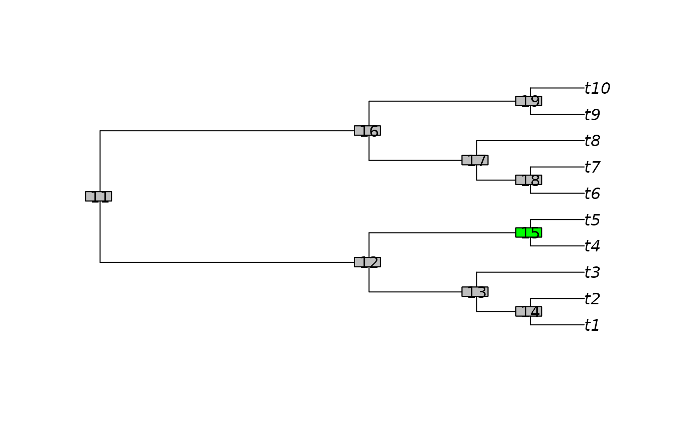
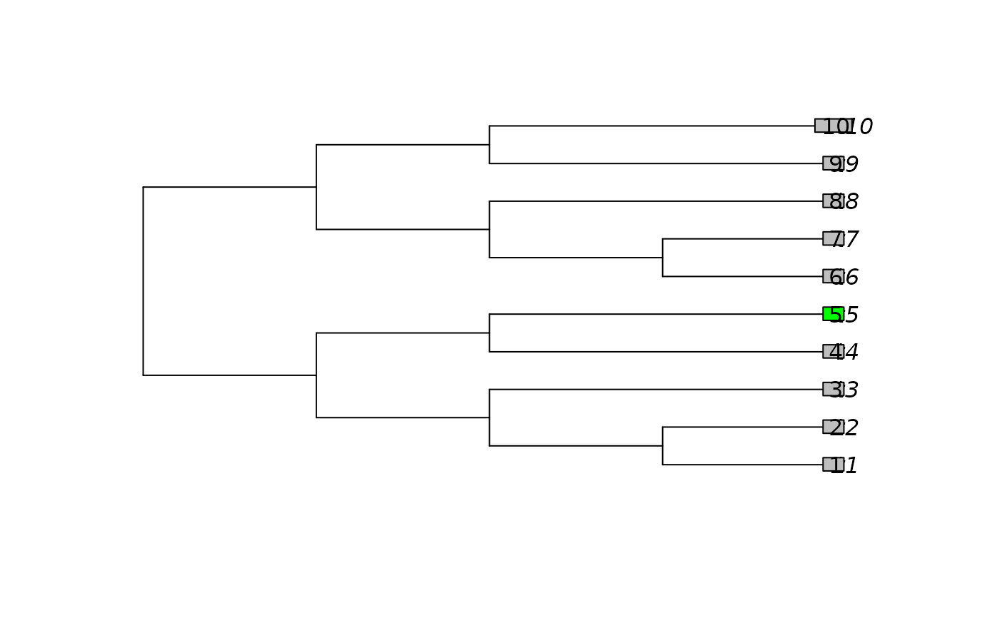
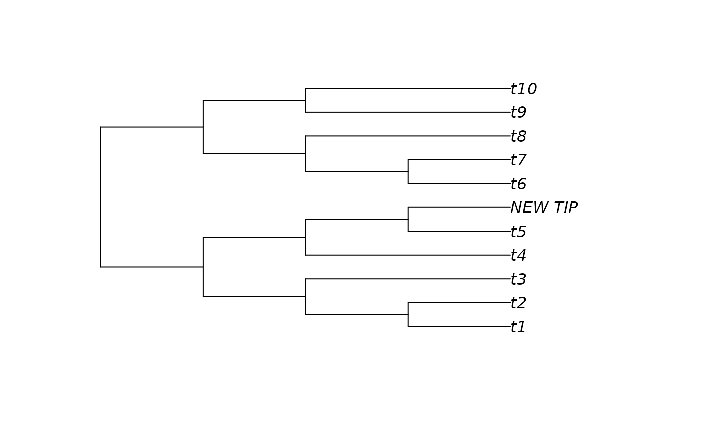
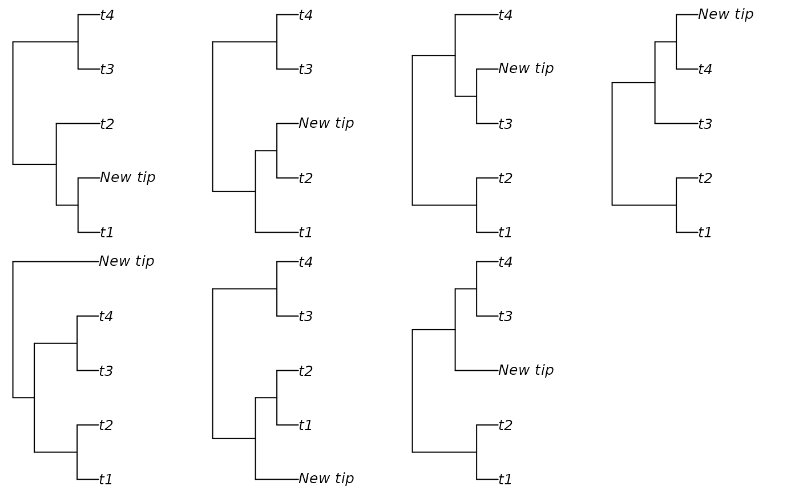
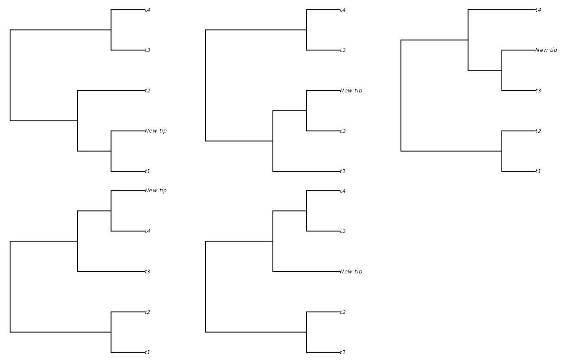
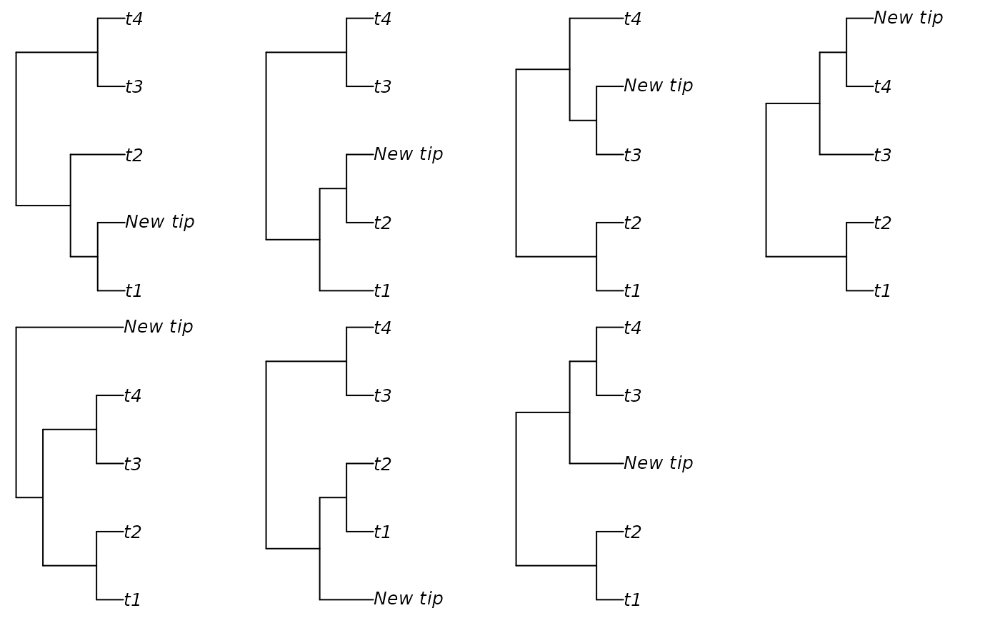
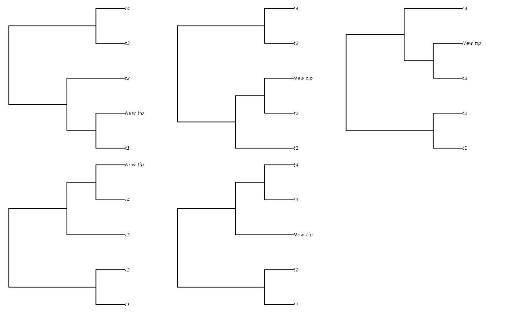

AddTip() adds a tip to a phylogenetic tree at a specified location.
Usage
AddTip(
tree,
where = sample.int(tree[["Nnode"]] * 2 + 2L, size = 1) - 1L,
label = "New tip",
nodeLabel = "",
edgeLength = 0,
lengthBelow = NULL,
nTip = NTip(tree),
nNode = tree[["Nnode"]],
rootNode = RootNode(tree)
)
AddTipEverywhere(tree, label = "New tip", includeRoot = FALSE)Arguments
- tree
A tree of class
phylo.- where
The node or tip that should form the sister taxon to the new node. To add a new tip at the root, use
where = 0. By default, the new tip is added to a random edge.- label
Character string providing the label to apply to the new tip.
- nodeLabel
Character string providing a label to apply to the newly created node, if
tree$node.labelis specified.- edgeLength
Numeric specifying length of new edge. If
NULL, defaults tolengthBelow. This will become the default behaviour in a future release; please manually specify the desired behaviour in your code.- lengthBelow
Numeric specifying length below neighbour at which to graft new edge. Values greater than the length of the edge will result in negative edge lengths. If
NULL, the default, the new tip will be added at the midpoint of the broken edge. If inserting at the root (where = 0), a new edge of lengthlengthBelowwill be inserted. IfNA, the new leaf will be attached adjacent towhere; at internal nodes, this will result in polytomy.- nTip, nNode, rootNode
Optional integer vectors specifying number of tips and nodes in
tree, and index of root node. Not checked for correctness: specifying values here yields a marginal speed increase at the cost of code safety.- includeRoot
Logical; if
TRUE, each position adjacent to the root edge is considered to represent distinct edges; ifFALSE, they are treated as a single edge.
Value
AddTip() returns a tree of class phylo with an additional tip
at the desired location.
AddTipEverywhere() returns a list of class multiPhylo containing
the trees produced by adding label to each edge of tree in turn.
Details
AddTip() extends bind.tree, which cannot handle
single-taxon trees.
AddTipEverywhere() adds a tip to each edge in turn.
See also
Add one tree to another: bind.tree()
Other tree manipulation:
CollapseNode(),
ConsensusWithout(),
DropTip(),
EnforceOutgroup(),
ImposeConstraint(),
KeptPaths(),
KeptVerts(),
LeafLabelInterchange(),
MakeTreeBinary(),
Renumber(),
RenumberTips(),
RenumberTree(),
RootTree(),
SortTree(),
Subtree(),
TipTimedTree(),
TrivialTree
Examples
tree <- BalancedTree(10)
# Add a leaf below an internal node
plot(tree)
ape::nodelabels() # Identify node numbers
node <- 15 # Select location to add leaf
ape::nodelabels(bg = ifelse(NodeNumbers(tree) == node, "green", "grey"))

plot(AddTip(tree, 15, "NEW_TIP"))
# Add edge lengths for an ultrametric tree
tree$edge.length <- rep(c(rep(1, 5), 2, 1, 2, 2), 2)
# Add a leaf to an external edge
leaf <- 5
plot(tree)
ape::tiplabels(bg = ifelse(seq_len(NTip(tree)) == leaf, "green", "grey"))

plot(AddTip(tree, 5, "NEW_TIP", edgeLength = NULL))

# Create a polytomy, rather than a new node
plot(AddTip(tree, 5, "NEW_TIP", edgeLength = NA))
#> Warning: 1 branch length(s) NA(s): branch lengths ignored in the plot
 # Set up multi-panel plot
oldPar <- par(mfrow = c(2, 4), mar = rep(0.3, 4), cex = 0.9)
# Add leaf to each edge on a tree in turn
backbone <- BalancedTree(4)
# Treating the position of the root as instructive:
additions <- AddTipEverywhere(backbone, includeRoot = TRUE)
xx <- lapply(additions, plot)
par(mfrow = c(2, 3))

# Don't treat root edges as distinct:
additions <- AddTipEverywhere(backbone, includeRoot = FALSE)
xx <- lapply(additions, plot)
# Restore original plotting parameters
par(oldPar)

# Set up multi-panel plot
oldPar <- par(mfrow = c(2, 4), mar = rep(0.3, 4), cex = 0.9)
# Add leaf to each edge on a tree in turn
backbone <- BalancedTree(4)
# Treating the position of the root as instructive:
additions <- AddTipEverywhere(backbone, includeRoot = TRUE)
xx <- lapply(additions, plot)
par(mfrow = c(2, 3))

# Don't treat root edges as distinct:
additions <- AddTipEverywhere(backbone, includeRoot = FALSE)
xx <- lapply(additions, plot)
# Restore original plotting parameters
par(oldPar)
